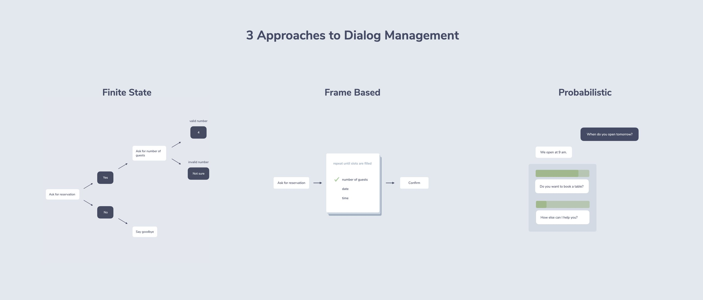

As part of my role in the Data Services team at the ABC, I have been working with our conversation designer, Michael Collett, to start laying the foundations of a future-thinking platform for voice and chat bots. While we are initially focusing on shipping a single app, we are putting an emphasis on developing a repeatable process for designing and building conversational interfaces.
The field of conversational design is in its infancy, and it has been our impression that it lacks both practical and conceptual tooling to properly empower teams to create delightful user experiences. We have endeavoured to learn from what is working from the knowledgable leaders in the industry and bring some of our own ideas to the table. We have a close working relationship with the Alexa team here in Australia and have been learning from their experience with previous projects.
Situational design is shaping up as an important idea and is rightfully getting lots of attention. While the obvious use cases (like ordering a pizza) fit neatly into the storyboarding approach recommended by Amazon we struggled to find a workflow for our iteration process that felt productive and collaborative between the designer and developer.
A series of tweets from Jan König, creator of the Jovo Framework, introduced us to the idea of a hybrid approach to design using the three broad strategies within a single app.

This idea appealed to us, but we lacked a framework of thinking for incorporating this into the design for the initial app we are developing. We came up with an approach with elements of both situational (frame based) and state-machine (finite state) styles that has allowed us to prototype quickly and then iterate with a focus on effective situational design principles.
When ideating and making the design decisions that shape the structure of the conversation at a high level, we found that the key things to strive for were:
Early feedback, particularly being able to actually interact with the design Focus on the happy path, concentrating on the immediate value to users
The ability to design using a flowchart in Voiceflow enabled us to visually understand the high-level design of the app while constantly testing our assumptions by interacting with the prototype. We were able to test our early designs on device and quickly validate assumptions in context and even on device.
Past the prototyping phase, the focus turns to the finer details and continuing with Voiceflow presents some challenges. Voiceflow projects are unsuited to frame-based approaches and can quickly become unwieldy when implementing complex logic. Keeping the prototype in sync enough with the production app to be useful for experimenting with tweaks will also present a challenge as the design evolves.
For this reason, we decided to pivot to a rather different way of communicating the design of our app. Storyboards are suited to this way of thinking, but the task of writing and maintaining a complex set of user flows as a set of diagrams come with their own challenges.
From this thinking, storyboards seem to be an effective conceptual tool but representing them as diagrams causes them to have limited utility.
What if we could use a storyboard-like specification format that would both communicate the design and be used to validate whether an implementation correctly implements it?
This consideration lead us to create a domain-specific language (DSL) for formally specifying conversational designs.
Taking the identification of a user’s location in Australian as an example, you would script a specific conversation starting from an initial state.
description: First time user says yes to first suburb
user:
visits: 0
favouriteLocation: false
aurora:
localities:
results: 1
conversation:
- Bot: "Welcome to ABC Emergency. What town or suburb would you like information about?"
- User: "LocalityIntent: {slot.locality}"
- Bot: "Is that {aurora.localities[0].suburb} in the {aurora.localities[0].abcRegion.region} region?"
- User: "YesIntent"As the design is refined, a set of conversations is then built-up in collaboration between the designer and developer that describes the desired behaviour of the app. If different behaviour is needed for a situation (eg. if it is new or returning user), you would include another conversation spec (as we’re calling them) per case. For example:
description: First time user says yes to second suburb
user:
visits: 0
favouriteLocation: false
aurora:
localities:
results: 1
conversation:
- Bot: "Welcome to ABC Emergency. What town or suburb would you like information about?"
- User: "LocalityIntent: {slot.locality}"
- Bot: "Is that {aurora.localities[0].suburb} in the {aurora.localities[0].abcRegion.region} region?"
- User: "NoIntent"
- Bot: "Hmm, what about {aurora.localities[1].suburb} in the {aurora.localities[1].abcRegion.region} area?"
- User: "YesIntent"To reduce maintenance burden, we also allow conversation specs to pick up from where another conversation left off. This means multiple paths from a single point can be tested without re-specifying the interaction leading up to it.
description: First time user gives postcode that matches suburb
pickupFrom: 1_location/1_firsttimeUser/1_suburb/3_suburb.yml
user:
visits: 0
favouriteLocation: true
aurora:
postcodeLocalities:
results: 3
conversation:
- Bot: "Hmm, let's try something different. Can you give me the postcode for the location you're after?"
- User: "PostcodeIntent: {slot.postcode}"
- Bot: "Got it, {aurora.postcodeLocalities[0].suburb} in {aurora.postcodeLocalities[0].abcRegion.region}"By using a machine-readable representation for these design artefacts, we open up a whole world of powerful tooling. The spec files can be used as a test suite and ensure 100% confidence that the actual app behaves as it was designed. We have created a CI pipeline to run the entire set of conversational specs against our implementation of the app and report back any inconsistencies.
Note that the specification for the location determination flow of our app has yielded 172 test specs, which enable the app logic to be implemented in a fully test-driven development environment (the full suite runs in under 5s). You can also see that we are testing every spec against both the Alexa and Google Assistant version of our app so we can ensure that both implementations are equivalent.
We are able to generate a detailed flowchart (using Mermaid) that shows the relationship between all the different conversations that “pick up” from earlier flows. This shows both the high-level flow and where small variations have been explored. The first version we created immediately showed us we had missed some situations which lead to some of the branches being dead-ends.
You may have noticed that we are specifying intents explicitly in the conversational specs rather than natural language phrases. This is to keep the mapping from natural language to intents out of this part of the design.
The NLP processing layer is different based on the platform being deployed to, and increases the complexity of the design. We will be testing and validating the language model deployed to each platform separately, using intents as the joining interface.